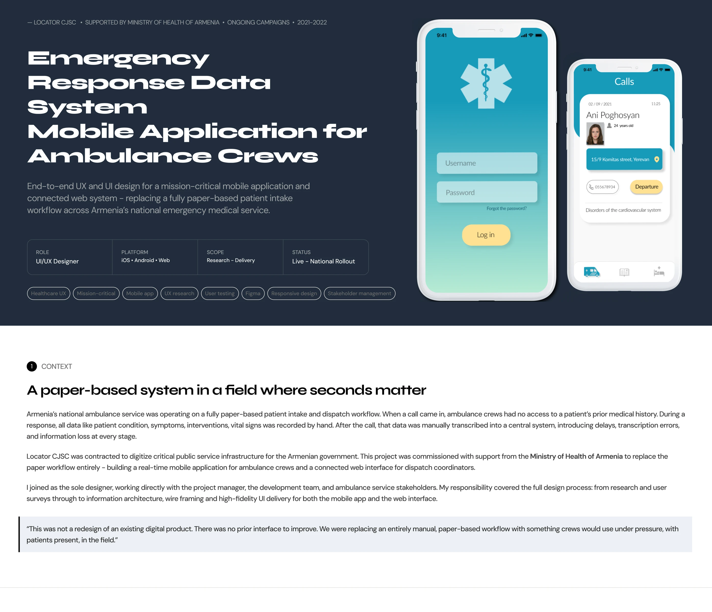
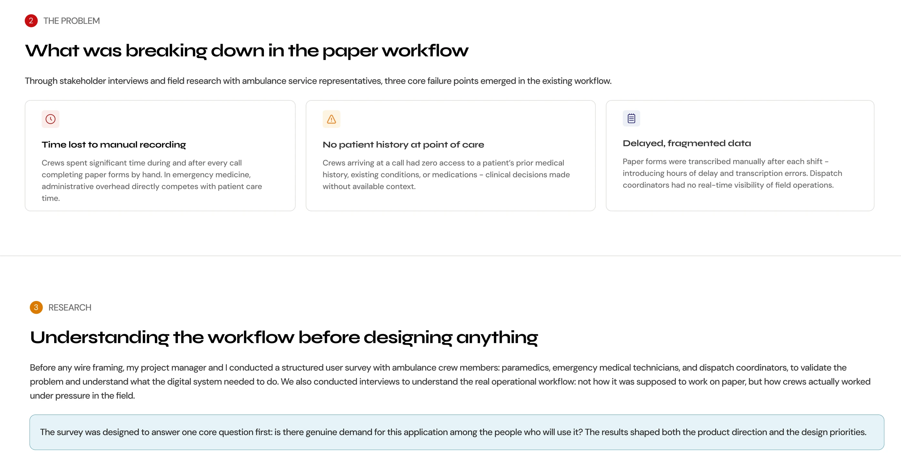
QUESTION 1
If you prefer an electronic version, why?
Yes, causes complications
55%
Sometimes
25%
Rarely
13%
No complications
7%
QUESTION 3
No patient history at point of care
Yes, strongly prefer app
65%
Open to it
22%
Neutral
13%
QUESTION 2
Time lost to manual recording
Faster data entry
70%
Fewer errors
55%
Better data access
36%
QUESTION 4
No patient history at point of care
Strongly support
72%
Support with reservations
20%
Prefer paper
8%
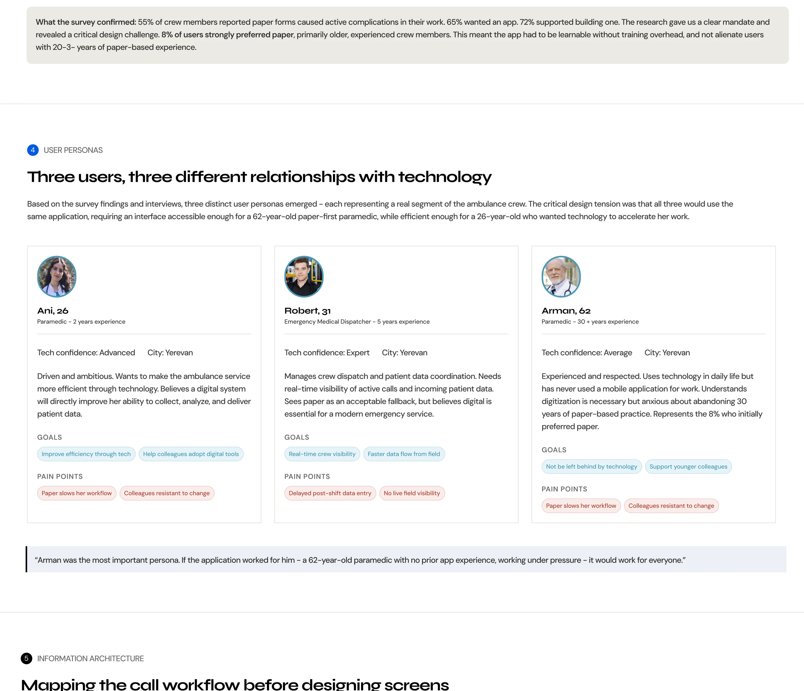
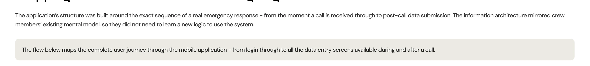
ENTRY
Log in / Sign up
Home screen
HOME NAVIGATION – THREE PRIMARY SECTIONS
Received calls
Calls journal
Hospital beds
Time schedule
ACTIVE CALL – ON-SCENE DATA ENTRY (JOURNAL TO DETAIL)
Clarified data
Call result
Complaints
Measurements
Urgent interventions
Provided assistance
CALL COMPLETION – FINAL DATA ENTRY
Complications
User medications
Hospitalization
Medical workers
General information
DEPARTURE / ARRIVAL TRACKING
Departure timestamp
Arrival confirmation
Data sync to central system
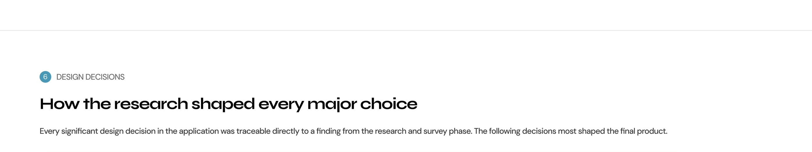
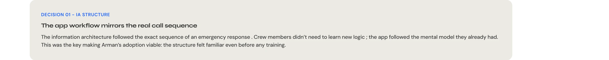
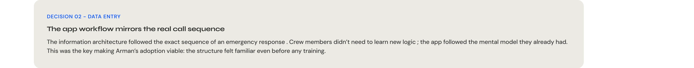
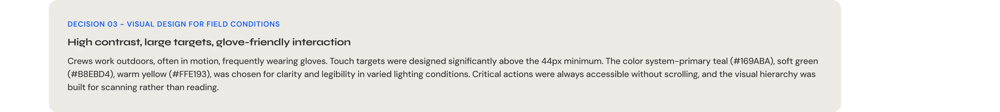
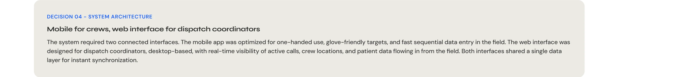
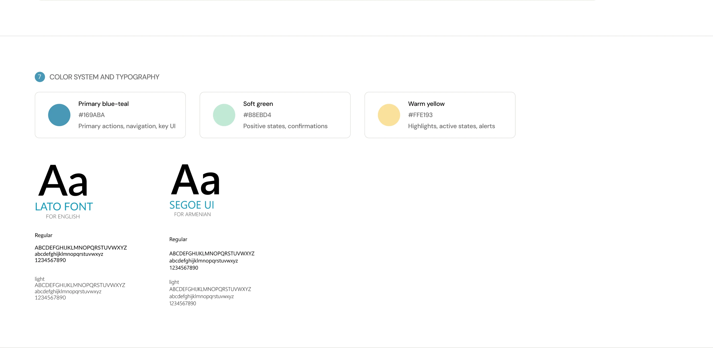
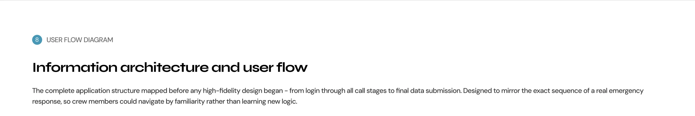
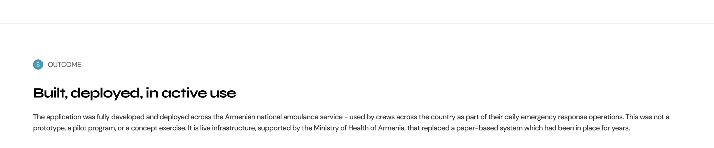
Live
National deployment
Deployed across all ambulance crews in Armenia’s national emergency medical service – a full national rollout, not a regional pilot
0
Paper forms remaining
The digital system fully replaced paper-based patient intake and post-call data entry across the service
Real-time
Live dispatch visibility
Dispatch coordinators gained real-time visibility of active calls and patient data – replacing delayed, manually transcribed records.
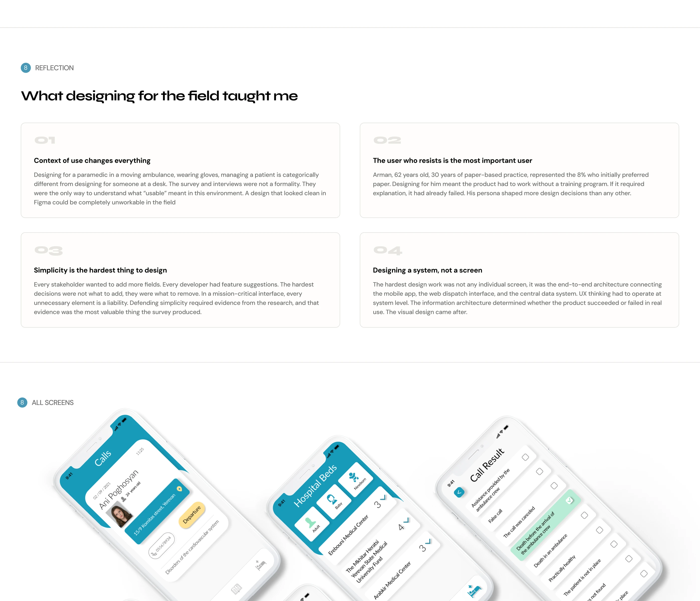
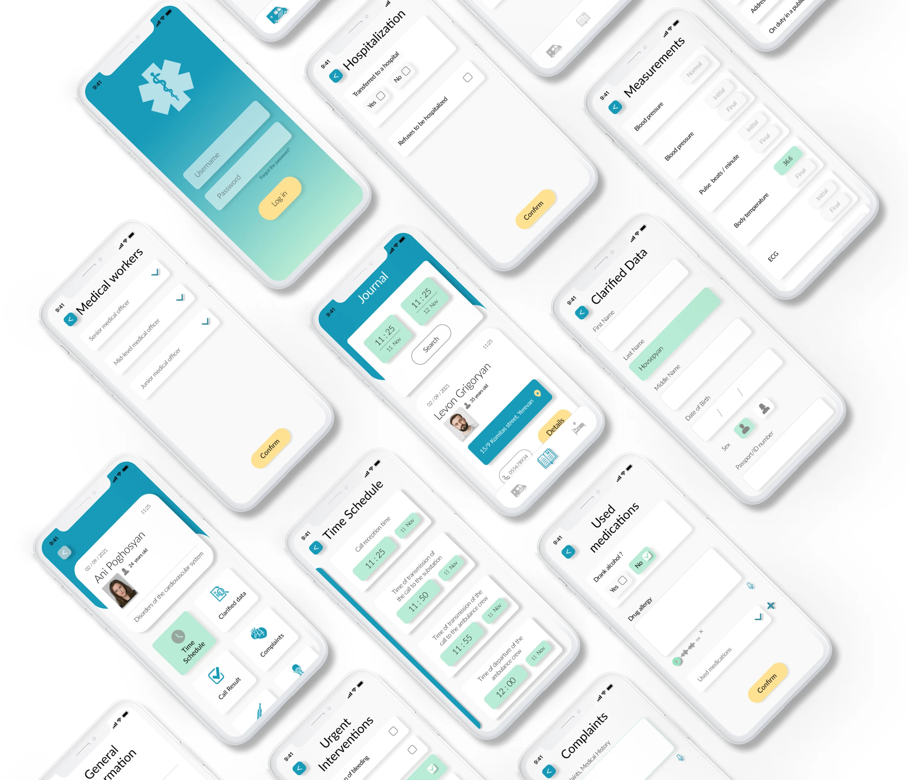
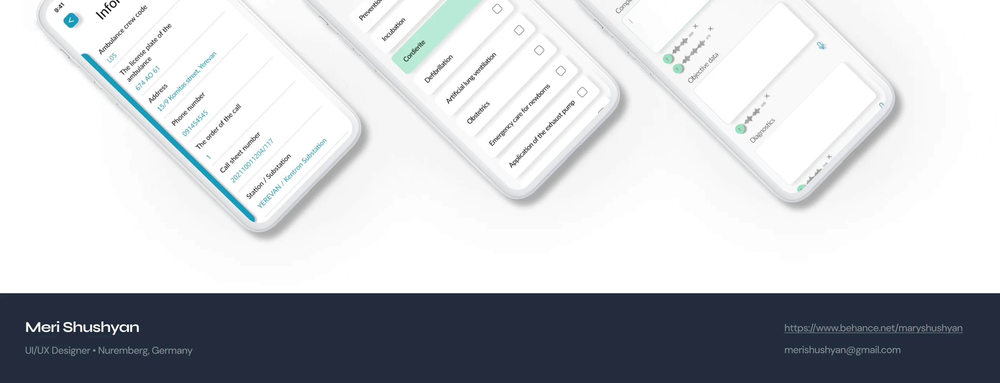